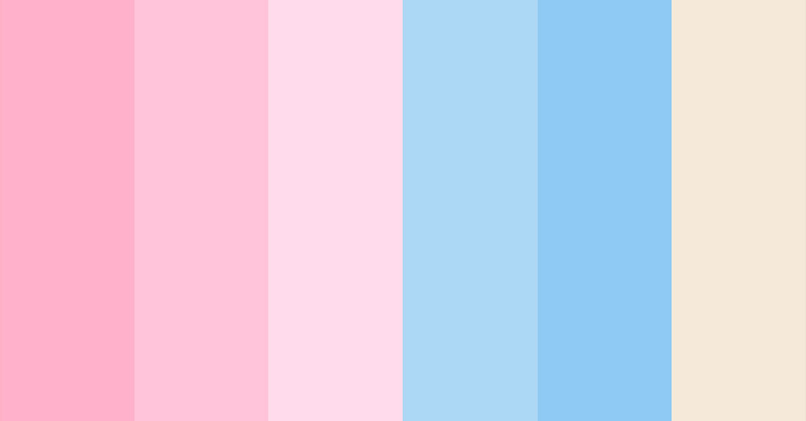

¡Hola, soy Estrella!
Estudio la Licentiatura en sistemas computacionales en la Universidad Autonóma de Chiapas. Me apasiona el diseño y desarrollo web, especialmente el estilo vintage.
Creo páginas web con un toque nostálgico que recuerdan a épocas pasadas. Cada diseño es único y busca capturar la esencia clásica en la era digital.
Me encanta combinar elementos retro con tecnología moderna para crear experiencias únicas y atractivas para los visitantes.
Me baso en una paleta de colores que sea apreciable para el publico y se sienta comodo
Los colores pasteles, como tonos suaves de rosa, azul, amarillo y verde, se utilizan en el diseño web vintage para evocar una sensación de nostalgia y romanticismo. Estos tonos suaves y apagados se inspiran en la estética de décadas pasadas, como los años 50 y 60.
Al utilizar colores pasteles en una página web vintage, se logra transmitir una atmósfera cálida y acogedora. Estos tonos suaves son agradables a la vista y evocan la sensación de lo retro y lo clásico, recordando épocas en las que los diseños eran más simples y elegantes.
